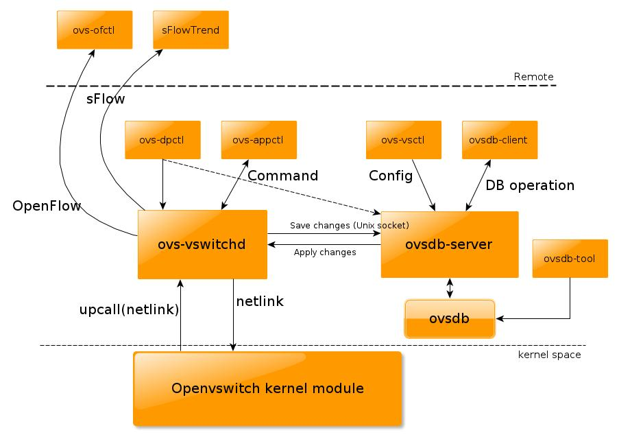
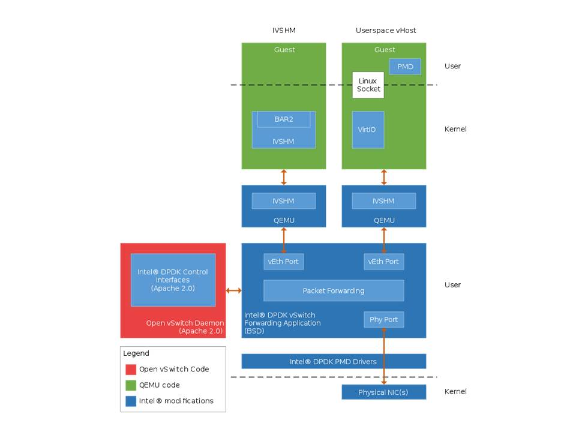
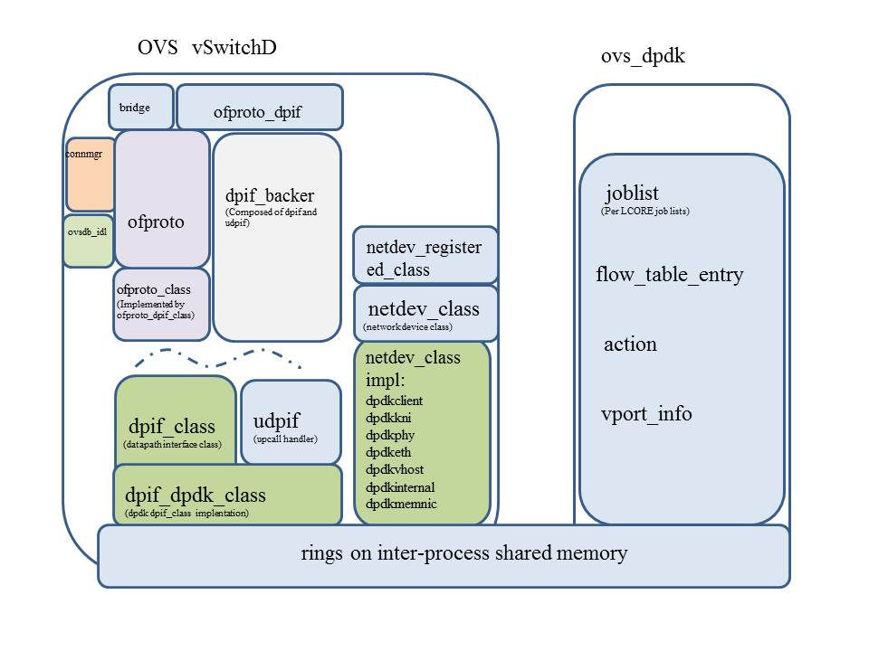

Cloud research related Notes
Table of Contents
Openstack
The OpenStack Open Source Cloud Mission: to produce the ubiquitous Open Source Cloud Computing platform that will meet the needs of public and private clouds regardless of size, by being simple to implement and massively scalable.
Installation
Start from dev stack
devstack
Run on single host
Host env: ubuntu 12.04 kernel 3.11.0-15-generic dev stack will help you download all neccesary components
- Add user stack and add stack to group sudo
adduser stack sudo usermod -a -G 27 stack //27 is the group ID of sudo
- Download the devstack, and make the configure file, then ./stack.sh
sudo apt-get install git -y git clone https://github.com/openstack-dev/devstack.git cd devstack cp devstack/samples/local.conf ./ cat local.conf [[local|localrc]] FLOATING_RANGE=192.168.1.224/27 //This is the external address that your instance will use. FIXED_RANGE=10.11.12.0/24 //internal address pool FIXED_NETWORK_SIZE=256 FLAT_INTERFACE=eth0 //external interface ADMIN_PASSWORD=password MYSQL_PASSWORD=password RABBIT_PASSWORD=password SERVICE_PASSWORD=password ./stack.sh
- Wait for the script finish.
Dash board is at http://192.168.0.5/admin/ //192.168.0.5 is the address of your host
Install openstack on ubuntu
Create your ubuntu image
http://docs.openstack.org/image-guide/content/ubuntu-image.html http://docs.openstack.org/user-guide/content/cli_manage_images.html http://yansu.org/2013/05/15/create-ubuntu-image-for-openstack.html
- Create the image file
kvm-img create -f raw ubuntu.img 10G
- Boot the VM to install the OS
sudo kvm -m 512 -cdrom ubuntu-12.04-server-amd64.iso -drive file=ubuntu.img -boot d -nographic -vnc :0 //vnc is enabled, then you can use vncviewer to connect to the VM to continue the installation
One error I met here
inet_listen_opts: bind(ipv4,0.0.0.0,5900): Address already in use inet_listen_opts: FAILED
This is because the port is taken by your VNC server on host, you need to disable it first.
- Use vncviewer to connect to the host, install ubuntu step by step
vncview localhost:5900
There is one step for disk partition, don't add the partition for swap. Just add one partition and mount at the "/"
- After the installation finished, eject the cdrom(ISO) and shutdown the VM.
- Now the ubuntu.img is the raw image for your cloud instance. if you want to convert it to qcow2 image
qemu-img convert -f raw -O qcow2 ./ubuntu.img ./ubuntu.qcow2
- Upload to glance
Add the variable to .bashrc file export OS_TENANT_NAME=admin export OS_USERNAME=admin export OS_PASSWORD=password export OS_AUTH_URL="http://localhost:5000/v2.0/" export SERVICE_ENDPOINT="http://localhost:35357/v2.0" export SERVICE_TOKEN=password
glance image-create --name ubuntu-image --disk-format=qcow2 --container-format=bare --is-public=True --file=./ubuntu.qcow2
Development
Components
Nova
Instance launch
- API
- Cloud controller
- Scheduler
- Compute service
- Network controller(might be handled by neutron)
http://www.laurentluce.com/posts/openstack-nova-internals-of-instance-launching/
Message
Hot used command
stack@dingo:~$ nova-manage service list 2014-07-29 22:30:11.630 DEBUG nova.servicegroup.api [-] ServiceGroup driver defined as an instance of db from (pid=13359) __new__ /opt/stack/nova/nova/servicegroup/api.py:65 2014-07-29 22:30:11.917 DEBUG nova.openstack.common.db.sqlalchemy.session [req-abc55775-6d43-4a05-a1a5-7697ece63014 None None] MySQL server mode set to STRICT_TRANS_TABLES,STRICT_ALL_TABLES,NO_ZERO_IN_DATE,NO_ZERO_DATE,ERROR_FOR_DIVISION_BY_ZERO,TRADITIONAL,NO_AUTO_CREATE_USER,NO_ENGINE_SUBSTITUTION from (pid=13359) _mysql_check_effective_sql_mode /opt/stack/nova/nova/openstack/common/db/sqlalchemy/session.py:562 Binary Host Zone Status State Updated_At nova-conductor dingo internal enabled :-) 2014-07-29 14:30:03 nova-compute dingo nova enabled :-) 2014-07-29 14:30:09 nova-cert dingo internal enabled :-) 2014-07-29 14:30:04 nova-network dingo internal enabled :-) 2014-07-29 14:30:02 nova-scheduler dingo internal enabled :-) 2014-07-29 14:30:10 nova-consoleauth dingo internal enabled :-) 2014-07-29 14:30:04 stack@dingo:~$ nova list +--------------------------------------+---------------+--------+------------+-------------+--------------------+ | ID | Name | Status | Task State | Power State | Networks | +--------------------------------------+---------------+--------+------------+-------------+--------------------+ | 87cbb674-7d34-496d-b4ee-12c9eef490da | ubuntu-server | ACTIVE | - | Running | private=10.11.12.2 | +--------------------------------------+---------------+--------+------------+-------------+--------------------+ stack@dingo:~$ virsh list Id 名称 状态 ---------------------------------- 10 instance-00000004 running virsh dumpxml 10//instance ID sudo rabbitmqctl list_queues //check the AMPQ queue status http://www.rabbitmq.com/man/rabbitmqctl.1.man.html //Create one instance nova keypair-add oskey > oskey.priv chmod 600 oskey.priv nova flavor-list nova image-list nova boot --flavor 2 --key_name oskey --image ea3ffba1-065e-483f-bfe2-c84184ee76be test1 nova secgroup-add-rule default tcp 22 22 0.0.0.0/0 nova secgroup-add-rule default icmp -1 -1 0.0.0.0/0 glance index nova image-list glance show ID //create key nova keypair-add oskey > oskey.priv chmod 600 oskey.priv //delete key nova keypair-delete oskey.priv nova keypair-delete oskey nova floating-ip-create //security nova secgroup-add-rule default tcp 22 22 0.0.0.0/0 nova secgroup-add-rule default icmp -1 -1 0.0.0.0/0 nova secgroup-list nova secgroup-list-rules default //flavor list nova flavor-list //floating ip nova floating-ip-list apply floating ip to some instance nova add-floating-ip 7eb1d4b3-13fa-4e39-be17-3a27eb0db218 10.1.199.33 nova remove-floating-ip ID 10.1.199.33 //delete instance nova delete ID //create volume nova volume-create --display_name "test volume" 10 //check volume list nova volume-list //attach volume to some instance nova volume-attach 7eb1d4b3-13fa-4e39-be17-3a27eb0db218 1 /dev/vdc //check the partitions in guest ubuntu@test1:~$ cat /proc/partitions major minor #blocks name 253 0 10485760 vda 253 1 10474380 vda1 253 16 20971520 vdb 253 32 10485760 vdc //format partition and mount to file system sudo mkfs.ext4 /dev/vdc sudo mkdir -p /mnt/volume sudo mount /dev/vdc /mnt/volume //delete volume nova volume-detach VM_ID Volume_ID //Create snapshot nova image-create 7eb1d4b3-13fa-4e39-be17-3a27eb0db218 "snapshot 1" //instance suspend, resume, reboot nova suspend ac9e6a9f-58c3-47c3-9b4c-485aa421b8a8 nova resume ac9e6a9f-58c3-47c3-9b4c-485aa421b8a8 nova reboot ac9e6a9f-58c3-47c3-9b4c-485aa421b8a8
OVS and OVDK
OVS Bridge, port and interface configuration are stored in DB DB bridge Port interface vSWD
Datapath
IVSHEM and virtio are client.
vHost and physical port are on host
Make change on QEMU to support vHost and IVSHEM
vHost
e1000
virtio: Host Tx: QEMU monitor and send packet to virtio queue. irqfd to notify the guest virtio
Host Rx: VM send packet to virtio rx queue, irqfd to notify the host. VM–>KVM–>QEMU–>KVM–>VM
VM–>KVM–>vhost–>KVM–>VM, with this way, don't need to switch between user space and kernel space
VM init process: VM driver –>init vq(rx, tx, ctl)–>QEMU–>vhost_net–>vhost_net driver
Traditional ovs

OVDK


Configure step by step
Databased startup
rm -f /usr/local/etc/openvswitch/conf.db ./ovsdb/ovsdb-tool create /usr/local/etc/openvswitch/conf.db ./vswitchd/vswitch.ovsschema ./ovsdb/ovsdb-server --remote=punix:/usr/local/var/run/openvswitch/db.sock --remote=db:Open_vSwitch,Open_vSwitch,manager_options&
Bridge , port , interface configuration
./utilities/ovs-vsctl --no-wait add-br br0 -- set Bridge br0 datapath_type=dpdk ./utilities/ovs-vsctl --no-wait list Interface ./utilities/ovs-vsctl --no-wait add-port br0 ovsclient1 -- set Interface ovsclient1 type=dpdkclient ofport_request=1 option:port=0 #Create port for physical port ./utilities/ovs-vsctl --no-wait add-port br0 ovsphy1 -- set Interface ovsphy1 type=dpdkphy ofport_request=1 option:port=0 ./utilities/ovs-vsctl --no-wait add-port br0 ovsphy2 -- set Interface ovsphy2 type=dpdkphy ofport_request=2 option:port=1 #create port for guest virtual port ./utilities/ovs-vsctl --no-wait add-port br0 ovsvhost3 -- set Interface ovsvhost3 type=dpdkvhost ofport_request=3 ./utilities/ovs-vsctl --no-wait add-port br0 ovsvhost4 -- set Interface ovsvhost4 type=dpdkvhost ofport_request=4 ./utilities/ovs-vsctl --no-wait add-port br0 ovsvhost5 -- set Interface ovsvhost5 type=dpdkvhost ofport_request=5 ./utilities/ovs-vsctl --no-wait add-port br0 ovsvhost6 -- set Interface ovsvhost6 type=dpdkvhost ofport_request=6 ./utilities/ovs-vsctl show
ovdk startup
./datapath/dpdk/ovs-dpdk -c 0xf0 -n 4 --proc-type primary --base-virtaddr=0x2aaa2aa0000 -m 2G -- --stats_core=5 --stats_int=1 -p 0x03
vswitchD startup
./vswitchd/ovs-vswitchd -c 0x100 -n 1 --proc-type=secondary & ./vswitchd/ovs-vswitchd -c 0x100 -n 1 --proc-type=secondary -- --verbose=dbg &
ovs-ofctl configure flow table
./utilities/ovs-ofctl add-flow br0 in_port=2,action=output:4 ./utilities/ovs-ofctl add-flow br0 in_port=3,action=output:5 ./utilities/ovs-ofctl add-flow br0 in_port=5,action=mod_dl_dst:00:00:00:00:00:05,output:3 ./utilities/ovs-ofctl add-flow br0 in_port=4,action=output:2 ./utilities/ovs-ofctl add-flow br0 in_port=2,action=output:4 ./utilities/ovs-ofctl add-flow br0 in_port=3,action=output:2 ./utilities/ovs-ofctl dump-flows br0
configure flow table with dpctl
./utilities/ovs-dpctl -c 1 -n 1 --proc-type=auto -- add-flow dpdk@br0 "in_port(1),eth(src=00:00:24:50:56:ab,dst=52:54:00:8f:e1:a1),eth_type(0x0800),ipv4(src=192.168.220.100,dst=192.168.220.123,proto=17,tos=0,ttl=0,frag=no),udp(src=2152,dst=2152)" "1" ./utilities/ovs-dpctl -c 1 -n 1 --proc-type=auto -- add-flow dpdk@br0 "in_port(65),eth(src=00:00:00:00:00:05,dst=02:00:00:00:00:00),eth_type(0x0800),ipv4(src=192.168.220.100,dst=192.168.220.123,proto=17,tos=0,ttl=0,frag=no),udp(src=2152,dst=2152)" "65"
VM startup
CFPU-0(vhost):
./qemu/x86_64-softmmu/qemu-system-x86_64 -c 0xf0 -n 4 --proc-type=auto -- -name CFPU-0 -hda /cfpu_0.img -cpu Nehalem,+erms,+smep,+fsgsbase,+pdpe1gb,+rdrand,+f16c,+osxsave,+dca,+pcid,+pdcm,+xtpr,+tm2,+aes,+est,+pclmulqdq,+smx,+vmx,+ds_cpl,+monitor,+dtes64,+pbe,+tm,+ht,+ss,+acpi,+ds,+vme -vnc :20 -smp 4 -enable-kvm -m 4096 -uuid 9cd27667-e152-4c43-b67b-639f80b5f15d -nodefconfig -mem-path /mnt/huge -mem-prealloc -netdev type=tap,id=net1,script=no,downscript=no,ifname=ovsvhost80,vhost=on -device virtio-net-pci,netdev=net1,mac=00:00:00:00:00:01,csum=off,gso=off,guest_tso4=off,guest_tso6=off,guest_ecn=off -net tap,ifname=tap0,script=no,downscript=no -net nic,model=e1000,macaddr=00:00:00:00:00:05
./qemu/x86_64-softmmu/qemu-system-x86_64 -c 0xf0 -n 4 --proc-type=auto -- -name CFPU-0 -hda /cfpu_0.img -cpu host -vnc :20 -smp 4 -enable-kvm -m 4096 -uuid 9cd27667-e152-4c43-b67b-639f80b5f15d -nodefconfig -mem-path /mnt/huge -mem-prealloc -netdev type=tap,id=net1,script=no,downscript=no,ifname=ovsvhost80,vhost=on -device virtio-net-pci,netdev=net1,mac=00:00:00:00:00:01,csum=off,gso=off,guest_tso4=off,guest_tso6=off,guest_ecn=off -net tap,ifname=tap0,script=no,downscript=no -net nic,model=e1000,macaddr=00:00:00:00:00:05
EIPU:
./qemu/x86_64-softmmu/qemu-system-x86_64 -name EIPU-0 -cpu Nehalem,+erms,+smep,+fsgsbase,+pdpe1gb,+rdrand,+f16c,+osxsave,+dca,+pcid,+pdcm,+xtpr,+tm2,+aes,+est,+pclmulqdq,+smx,+vmx,+ds_cpl,+monitor,+dtes64,+pbe,+tm,+ss,+acpi,+ds,+vme,+tsc -enable-kvm -m 4096 -smp 4,sockets=1,cores=4,threads=1 -uuid 6e56554e-5df6-3d61-e5de-ac7c34e070ea -net tap,ifname=tap0,script=no,downscript=no -net nic,model=virtio,macaddr=52:54:00:12:CF:04 -net tap,ifname=tap2,script=no,downscript=no -net nic,model=virtio,macaddr=52:54:00:12:CF:05 -net tap,ifname=tap3,script=no,downscript=no -net nic,model=virtio,macaddr=00:00:00:00:00:03 -mem-path /mnt/huge/ -mem-prealloc -netdev type=tap,id=net1,script=no,downscript=no,ifname=ovsvhost3,vhost=on -device virtio-net-pci,netdev=net1,mac=00:00:00:00:00:05,csum=off,gso=off,guest_tso4=off,guest_tso6=off,guest_ecn=off -netdev type=tap,id=net2,script=no,downscript=no,ifname=ovsvhost4,vhost=on -device virtio-net-pci,netdev=net2,mac=00:00:00:00:00:06,csum=off,gso=off,guest_tso4=off,guest_tso6=off,guest_ecn=off -vnc :20 &
USPU:
./qemu/x86_64-softmmu/qemu-system-x86_64 -name USPU-0 -cpu Nehalem,+erms,+smep,+fsgsbase,+pdpe1gb,+rdrand,+f16c,+osxsave,+dca,+pcid,+pdcm,+xtpr,+tm2,+aes,+est,+pclmulqdq,+smx,+vmx,+ds_cpl,+monitor,+dtes64,+pbe,+tm,+ss,+acpi,+ds,+vme,+aes -enable-kvm -m 4096 -smp 4,sockets=1,cores=4,threads=1 -uuid 6e56554e-5df6-3d61-e5de-ac7c34e070ea -net tap,ifname=tap5,script=no,downscript=no -net nic,model=virtio,macaddr=52:54:00:12:CF:03 -net tap,ifname=tap6,script=no,downscript=no -net nic,model=virtio,macaddr=00:00:00:00:12:34 -net none -no-reboot -mem-path /mnt/huge/ -mem-prealloc -netdev type=tap,id=net8,script=no,downscript=no,ifname=ovsvhost5,vhost=on -device virtio-net-pci,netdev=net8,mac=00:00:00:00:00:08,csum=off,gso=off,guest_tso4=off,guest_tso6=off,guest_ecn=off -vnc :21 &
IVSHM:
./qemu/x86_64-softmmu/qemu-system-x86_64 -c 0x300 -n 4 --proc-type=auto -- -name Ubuntu -cpu host -smp 3 -hda /root/tang/ovs/ubuntu.qcow2 -m 4096 -boot menu=off -uuid 9cd27667-e152-4c43-b67b-639f80b5f15d -vnc :35 -enable-kvm -vga cirrus -net tap,ifname=tap0,script=no,downscript=no -net nic,model=virtio,macaddr=00:BD:86:23:35:C2 -net tap,ifname=tap1,script=no,downscript=no -net nic,model=virtio,macaddr=00:BD:86:23:35:C3 -device ivshmem,size=1g,shm=fd:/mnt/huge/rtemap_0:0:40000000 -drive file=fat:~/tang/share,snapshot=off &
VIRTIO:
./qemu/x86_64-softmmu/qemu-system-x86_64 -c 0x30 -n 4 --proc-type=secondary -- -cpu host -hda /root/tang/fews.img -m 1024 -netdev dpdk,port=1,id=me1 -device virtio-net-pci,netdev=me1,mac=00:00:00:00:00:01 -net tap,ifname=tap0,script=no,downscript=no -net nic,model=virtio,macaddr=00:00:00:00:00:05 -smp 2 --enable-kvm -name Ubuntu -vnc :35 -vga cirrus -device virtio-balloon-pci,id=balloon0,bus=pci.0,addr=0x5 -rtc base=utc -no-shutdown -device piix3-usb-uhci,id=usb,bus=pci.0,addr=0x1.0x2 -drive file=fat:rw:~/tang/share,snapshot=off &
VHOST:
./qemu/x86_64-softmmu/qemu-system-x86_64 -c 0x300 --proc-type secondary -n 4 -- -cpu host -hda /root/tang/ovs/ubuntu.qcow2 -m 8192 -smp 2 -enable-kvm -name "client 1" -nographic -vnc :35 -mem-path /dev/hugepages -mem-prealloc -netdev type=tap,id=net1,script=no,downscript=no,ifname=ovsvhost80,vhost=on -device virtio-net-pci,netdev=net1,mac=00:00:00:00:00:01,csum=off,gso=off,guest_tso4=off,guest_tso6=off,guest_ecn=off -netdev type=tap,id=net2,script=no,downscript=no,ifname=ovsvhost81,vhost=on -device virtio-net-pci,netdev=net2,mac=00:00:00:00:00:02,csum=off,gso=off,guest_tso4=off,guest_tso6=off,guest_ecn=off -drive file=fat:~/tang/share,snapshot=off &
Fedora:
kill -9 `ps -ef | grep -v grep | grep Fedora | awk '{print $2}' `
./qemu/x86_64-softmmu/qemu-system-x86_64 -name Fedora -m 4096 -smp 3,sockets=1,cores=3,threads=1 -enable-kvm -cpu host -hda /root/tang/Fedora.qcow2 -drive file=fat:~/tang/share,snapshot=off -vnc :30 -vga std
Kill ovdk
kill -9 `ps -ef | grep -v grep | grep ovs-vswitchd | awk '{print $2}' `
kill -9 `ps -ef | grep -v grep | grep ovs-dpdk | awk '{print $2}' `
kill -9 `ps -ef | grep -v grep | grep ovsdb-server | awk '{print $2}' `
Delete flow
./utilities/ovs-ofctl del-flows br0
port 0: ovsphy1 (dpdkphy)
port 1: ovsphy2 (dpdkphy)
port 64: ovsvhost5 (dpdkvhost)
port 65: ovsvhost3 (dpdkvhost)
port 66: ovsvhost6 (dpdkvhost)
port 67: ovsvhost4 (dpdkvhost)
port 128: br0 (internal)
./utilities/ovs-dpctl -c 1 -n 1 --proc-type=auto -- del-flows dpdk@br0
./utilities/ovs-dpctl -c 1 -n 1 --proc-type=auto -- dump-flows dpdk@br0
./utilities/ovs-dpctl -c 1 -n 1 --proc-type=auto -- show dpdk@br0
Kill QEMU
ps -ef | grep qemu-system-x86_64
QEMU:
kill -9 `ps -ef | grep -v grep | grep CFPU | awk '{print $2}' `
kill -9 `ps -ef | grep -v grep | grep EIPU | awk '{print $2}' `
kill -9 `ps -ef | grep -v grep | grep USPU | awk '{print $2}' `
ps -p `ps -ef | grep -v grep | grep EIPU | awk '{print $2}' ` -mo cpuid,tid,%cpu,cmd
IVSHEM
Host: mkdir /root/tang/share mkdir /root/tang/share/DPDK chmod 777 /root/tang/share cp -a /path/to/ovs_client/* /root/tang/share cp -a /path/to/DPDK/* /root/tang/share/DPDK cp -a /var/run/.rte_* /root/tang/share Client: sudo mkdir -p /mnt/ovs_client sudo mount -o iocharset=utf8 /dev/sdb1 /mnt/ovs_client sudo cp -a /mnt/ovs_client/.rte_* /var/run sudo sysctl vm.nr_hugepages=256 mkdir /mnt/hugepages sudo mount -t hugetlbfs nodev /mnt/hugepages ln -s /sys/devices/pci0000:00/0000:00:04:0/resource2 /mnt/huge/rtemap_0 sudo ./ovs_client -c 1 -n 1 --proc-type=secondary -- -p Client1
DPDK
Intel virtualization
SR-IOV
What is
http://blog.scottlowe.org/2009/12/02/what-is-sr-iov/
I/O virtualization is a topic that has received a fair amount of attention recently, due in no small part to the attention given to Xsigo Systems after their participation in the Gestalt IT Tech Field Day. While Xsigo uses InfiniBand as their I/O virtualization mechanism, there are other I/O virtualization technologies out there as well. One of these technologies is Single Root I/O Virtualization (SR-IOV).
So what is SR-IOV? The short answer is that SR-IOV is a specification that allows a PCIe device to appear to be multiple separate physical PCIe devices. The SR-IOV specification was created and is maintained by the PCI SIG, with the idea that a standard specification will help promote interoperability. SR-IOV works by introducing the idea of physical functions (PFs) and virtual functions (VFs). Physical functions (PFs) are full-featured PCIe functions; virtual functions (VFs) are “lightweight” functions that lack configuration resources. (I’ll explain why VFs lack these configuration resources shortly.) SR-IOV requires support in the BIOS as well as in the operating system instance or hypervisor that is running on the hardware. Until very recently, I had been under the impression that SR-IOV was handled solely in hardware and did not require any software support; unfortunately, I was mistaken. Software support in the operating system instance or hypervisor is definitely required. To understand why, I must talk a bit more about PFs and VFs.
I mentioned earlier that PFs are full-featured PCIe functions; they are discovered, managed, and manipulated like any other PCIe device. PFs have full configuration resources, meaning that it’s possible to configure or control the PCIe device via the PF, and (of course) the PF has full ability to move data in and out of the device. VFs are similar to PFs but lack configuration resources; basically, they only have the ability to move data in and out. VFs can’t be configured, because that would change the underlying PF and thus all other VFs; configuration can only be done against the PF. Because VFs can’t be treated like a full PCIe device, then the OS or hypervisor instance must be aware that they are not full PCIe devices. Hence, OS or hypervisor support is required for SR-IOV so that the OS instance or hypervisor can properly detect and initialize PFs and VFs correctly and appropriately. At this time, SR-IOV support is only found in some of the open source Linux kernels; this means it will find its way into KVM and Xen first. I do not have a timeframe for SR-IOV support in VMware vSphere or Microsoft Hyper-V. So, putting this all together: what do you get when you have an SR-IOV-enabled PCIe device in a system with the appropriate BIOS and hardware support and you’re running an OS instance or hypervisor with SR-IOV support? Basically, you get the ability for that PCIe device to present multiple instances of itself up to the OS instance or hypervisor. The number of virtual instances that can be presented depends upon the device. The PCI SIG SR-IOV specification indicates that each device can have up to 256 VFs. Depending on the SR-IOV device in question and how it is made, it might present itself in a variety of ways. Consider these exampes: A quad-port SR-IOV network interface card (NIC) presents itself as four devices, each with a single port. Each of these devices could have up to 256 VFs (single port NICs) for a theoretical total of 1,024 VFs. In this case, each VF would essentially represent a single NIC port. A dual-port SR-IOV host bus adapter (HBA) presents itself as one device with two ports. With 256 VFs, this would result in 512 HBA ports spread across 256 dual-port virtual HBAs. These are, of course, theoretical maximums. Because each VF requires actual hardware resources, practical limits are much lower. Currently, 64 VFs seems to be the upper limit for most devices. In situations where VFs represent additional NIC ports or HBA ports, other technologies must also come into play. For example, suppose that you had an SR-IOV-enabled Fibre Channel HBA in a system; that HBA could present itself as multiple, separate HBAs. Of course, because these logical HBAs would still share a single physical HBA port, you’d need NPIV (more information here) to support running multiple WWNs and N_Port_IDs on a single physical HBA port. Similarly, you might have a Gigabit Ethernet NIC with SR-IOV support. That NIC could theoretically (according to the PCI SIG SR-IOV specification) present itself as up to 256 virtual NICs. Each of these NICs would be discrete and separate to the OS instance or hypervisor, but the physical Ethernet switch wouldn’t be aware of the VFs. Switches wouldn’t, by default, reflect some types of traffic arriving inbound on a port (from one VF) back out on the same port (to another VF). This could create some unexpected results. SR-IOV does have its limitations. The VFs have to be the same type of device as the PF; you couldn’t, for example, have VFs that presented themselves as one type of device when the PF presented itself as a different type of device. Also, recall from earlier that VFs generally can’t be used to configure the actual physical device, although the extent to which this is true depends upon the implementation. The SR-IOV specification allows some leeway in the actual implementation; this leeway means that some SR-IOV-enabled NICs may also have VF switching functionality present (where the NIC could switch traffic between VFs without the assistance of a physical switch) while other NICs may not have VF switching functionality present (in which case VFs would not be able to communicate with each other without the presence of a physical switch).
I do want to point out that SR-IOV is related to, but not the same as, hypervisor bypass (think VMDirectPath in VMware vSphere). SR-IOV enables hypervisor bypass by providing the ability for VMs to attach to a VF and share a single physical NIC. However, the use of SR-IOV does not automatically indicate the hypervisor bypass will also be involved. Hypervisor bypass is a topic that I’m sure I will discuss in more detail in the near future. Finally, it’s worth noting that the PCI SIG is also working on a separate IOV specification that allows multiple systems to share PCIe devices. This specification, known as Multi-Root IOV (MR-IOV), would enable multiple systems to share PCIe VFs. I hope to have more information on MR-IOV in the near future as well. You now should have a basic understanding of SR-IOV, what it does, what is necessary to support it, and some of the benefits and drawbacks that SR-IOV creates. Feel free to post any questions you have about SR-IOV in the comments and I’ll do my best to get answers for you.
NIC
82599
virtualization
- Overview
- Direct assignment of part of the port resources to different guest operating systems
using the PCI SIG SR IOV standard. Also known as native mode or pass through mode. This mode is referenced as IOV mode throughout this section.
- Central management of the networking resources by an IOVM or by the VMM. Also
known as software switch acceleration mode. This mode is referred to as Next Generation VMDq mode in this section.
KVM and QEMU
/qemu/x86_64-softmmu/qemu-system- x86_64 -name EIPU-0 -cpu Nehalem,+erms,+smep,+fsgsbase,+pdpe1gb,+rdrand,+f16c,+osxsave,+dca,+pcid,+pdcm,+xtpr,+tm2,+aes,+est,+pclmulqdq,+smx,+vmx,+ds_cpl,+monitor,+dtes64,+pbe,+tm,+ht,+ss,+acpi,+ds,+vme -enable-kvm -m 4096 -smp 6,sockets=1,cores=6,threads=1 -uuid 6e56554e-5df6-3d61-e5de-ac7c34e070ea -net tap,ifname=tap0,script=no,downscript=no -net nic,model=virtio,macaddr=52:54:00:12:CF:04 -net tap,ifname=tap2,script=no,downscript=no -net nic,model=virtio,macaddr=52:54:00:12:CF:05 -net tap,ifname=tap3,script=no,downscript=no -net nic,model=virtio,macaddr=00:00:00:00:00:03 -mem-path mnt/huge -mem-prealloc -netdev type=tap,id=net1,script=no,downscript=no,ifname=ovsvhost3,vhost=on -device virtio-net-pci,netdev=net1,mac=00:00:00:00:00:05,csum=off,gso=off,guest_tso4=off,guest_tso6=off,guest_ecn=off -netdev type=tap,id=net2,script=no,downscript=no,ifname=ovsvhost4,vhost=on -device virtio-net-pci,netdev=net2,mac=00:00:00:00:00:06,csum=off,gso=off,guest_tso4=off,guest_tso6=off,guest_ecn=off -vnc :20 &
NFV
Aricent-Cloud-RAN-Whitepaper
http://www.aricent.com/sites/default/files/whitepapers/Aricent-Cloud-RAN-Whitepaper.pdf
Basic knowlege
Terms
Erlang - a unit of traffic
An Erlang is a unit of telecommunications traffic measurement. Strictly speaking, an Erlang represents the continuous use of one voice path. In practice, it is used to describe the total traffic volume of one hour. For example, if a group of user made 30 calls in one hour, and each call had an average call duration of 5 minutes, then the number of Erlangs this represents is worked out as follows: Minutes of traffic in the hour = number of calls x duration Minutes of traffic in the hour = 30 x 5 Minutes of traffic in the hour = 150 Hours of traffic in the hour = 150 / 60 Hours of traffic in the hour = 2.5 Traffic figure = 2.5 Erlangs Erlang traffic measurements are made in order to help telecommunications network designers understand traffic patterns within their voice networks. This is essential if they are to successfully design their network topology and establish the necessary trunk group sizes. Erlang traffic measurements or estimates can be used to work out how many lines are required between a telephone system and a central office (PSTN exchange lines), or between multiple network locations.